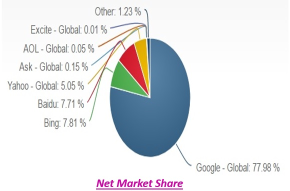

Se ha preguntado alguna vez: si para sus clientes y los nuevos que pudiera captar, que tan importante son los comentarios que ellos encuentran en línea en relación a su producto o servicio? Y si el incremento o el descenso en las ventas del producto o servicio que usted vende está directamente o proporcionalmente relacionado con la información que los consumidores encuentran en la red acerca de su marca?
Pues bien un estudio realizado por “BrightLocal” una agencia dedicada hacer crecer negocios con internet en Londres cuenta que un 90% de los consumidores se crea un concepto en relación al producto leyendo comentarios menores o igual a 10 y el 54% de estos visita el sitio web de la empresa solo si ve críticas positivas.
Por lo anterior en un mundo moderno, desde individuos, negocios, organizaciones públicas, tienen ahora dos identidades: una la que existe en la vida real y la otra la vida online. Su online reputación puede varia al vaivén del viento, es decir, de la noche a la mañana puede ser desplomada o enaltecida tan rápido ya sea por un satisfecho o insatisfecho cliente quien con solo clic de envió hace una buena o mala crítica sobre el sitio web o en redes sociales de la organización.
Asi que, ahora más que nunca la gente busca en internet para obtener información acerca de personas naturales, negocios y formular opiniones. La tendencia apunta a ser más importante la vida online que la vida real en relación a las primeras impresiones, así que es una buena oportunidad de obtener una imagen positiva porque podría no haber otro chance de ello.
De acuerdo al “2017 Edelman Trust Barometer” que es una compañía que ayuda a clientes a crear herramientas para una comunicación efectiva que fomente el compromiso y construir relaciones con los stakeholders (grupos de interés en una compañía) muestra que el 64% del global de países de los continentes Europeos, Norteamericanos, Asia, Nórdicos, entre otros, confían en los motores de búsqueda cuando están interesados en conocer acerca de una empresa en comparación a la forma tradicional de búsqueda de información general así que prefieren unánimemente el internet.
Por otra parte el autocompletado de Google o mejor conocido como Google instantáneo cuando realizas una búsqueda te da sugerencias sobre lo que cree que estás buscando y esto cambia de manera orgánica y en algunas ocasiones puede poner en aprietos a algunos negocios y llevarte en tu búsqueda en la dirección equivocada o darte una impresión de un negocio que no esperabas, así que a la hora de generar contenido para tu negocio es bueno ponerse en los zapatos de los consumidores o como te gustaría que tu empresa sea vista o piensen acerca de ti.

De acuerdo a “Net Market Share” el motor de búsqueda de Google lidera con un 77.89% el tráfico de búsqueda, cada motor de búsqueda tiene sus reglas que determina para estos la relevancia de cada sitio web, aplicación y estas reglas no son dadas a conocer a los anunciantes. A pesar del grado de importancia que se puede describir por medio del grafico para Google es de suma importancia tener en cuenta los otros motores de búsqueda cuando se trata de hacer SEO Internacional.
“Googleo luego compro”, a su vez para bien o para mal la mayoría de los consumidores realizan revisiones a las críticas o sistemas de feedback en los motores de búsqueda para obtener más información acerca de lo que otros consumidores han escrito acerca de una marca, producto o servicio para determinar si acaso la empresa a la que le gustaría comprar es buena o no.
Por lo anterior descrito algunas empresas se están preocupando por crear, mantener y mejorar su identidad digital ya que el internet se ha convertido en un potente canal para dar a conocer tu marca, producto y/o servicio y se ha convertido en un paso casi obligatorio en la toma de decisión si compran o no productos de determinada empresa.
Lo anterior conlleva a concluir que no solo es necesario que las organizaciones incrementen su presencia en la red si no también que busquen y ejecuten estrategias que mejoren su reputación empresarial a través del concepto de internet marketing y asi no quedarse por fuera de las opciones del comprador.
Asi en cuanto a reputación online se refiere se debe tener en cuenta no solo lo que los clientes y/o consumidores dicen de la marca sino también como obtener una comunicación efectiva online, como están percibiendo el producto, si se está posicionando la marca o no tomando un mayor partido frente a los competidores y que estrategias ejecutar para solucionar en caso de una información negativa en relación a la marca que afecta la imagen de la compañía.